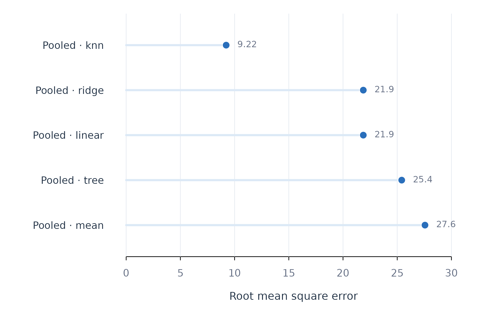
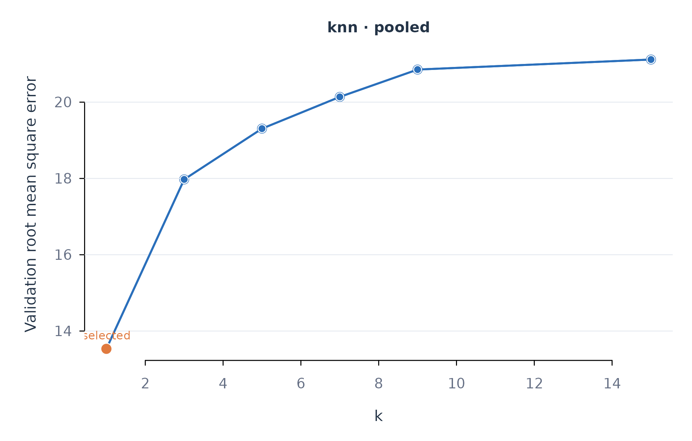
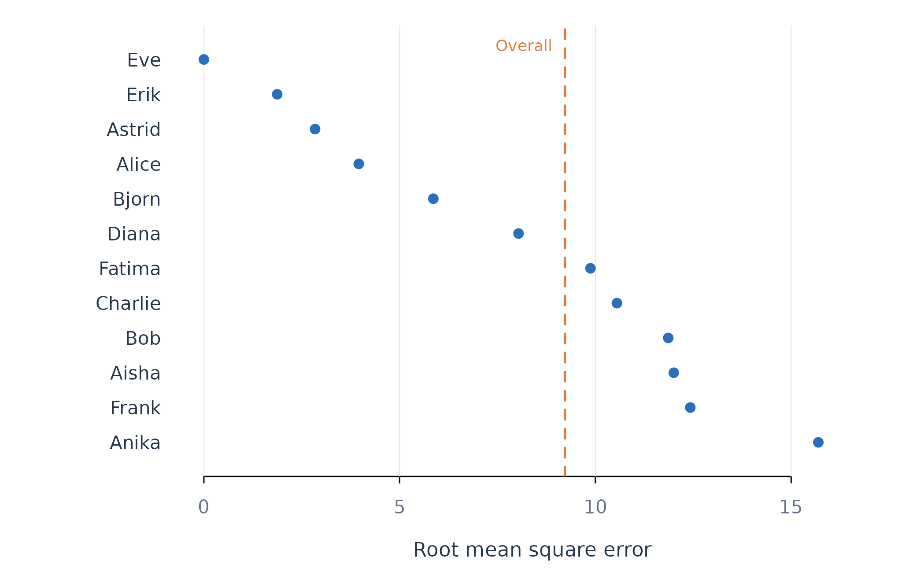
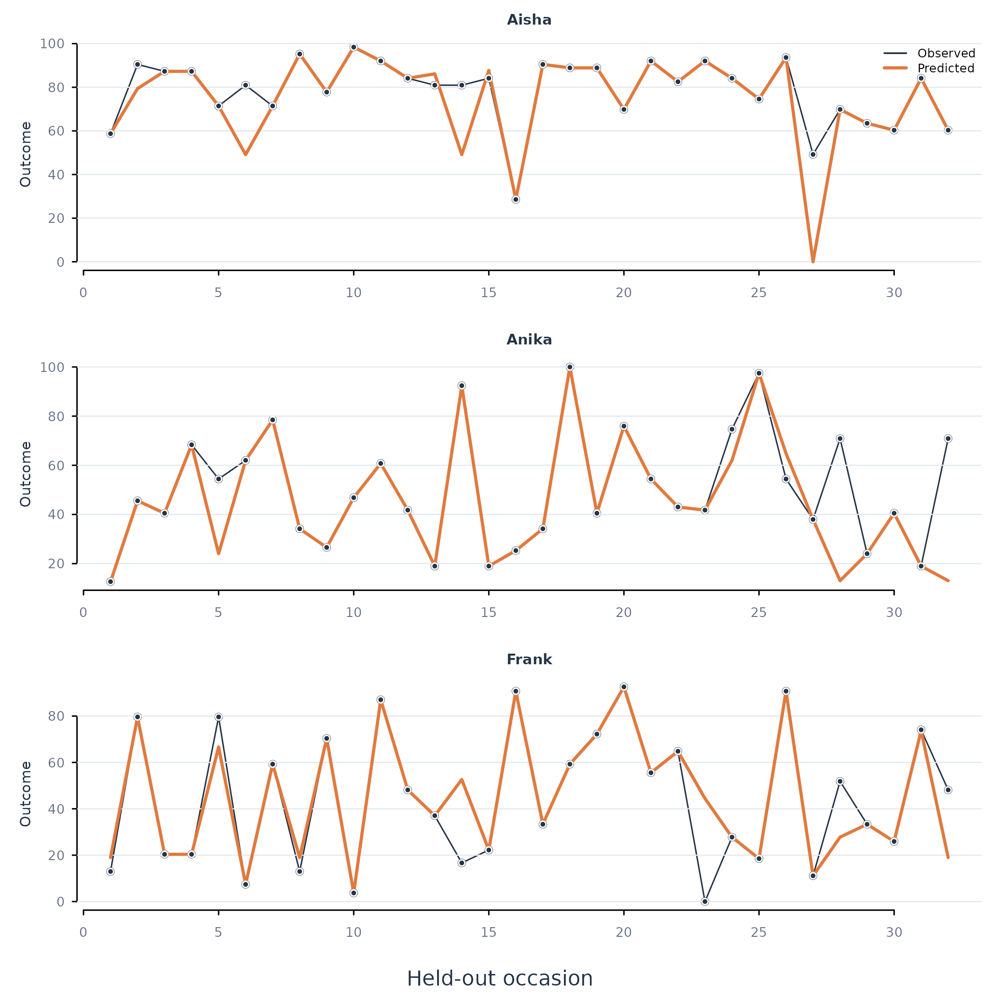
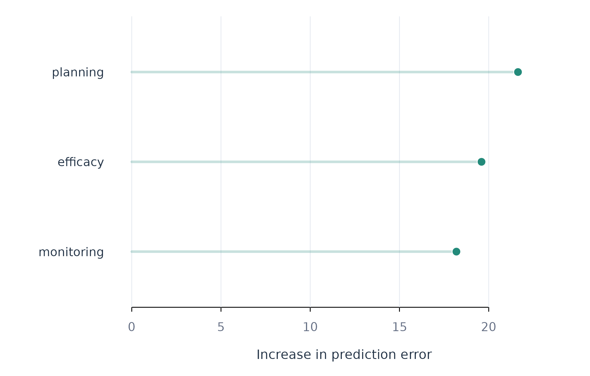

Analytic question
fit_ml() asks a prospective question: how accurately can
measurements already observed predict a person’s later outcome? It
compares algorithms at pooled, subgroup, or individual scopes and
returns held-out predictions, person-level and aggregate metrics, tuning
results, coefficients or importance where available, and explicit
fitting failures.
This question differs from explaining an in-sample association. A flexible model can reproduce its training data and still fail on later observations. Accordingly, every comparison below uses the same chronologically later test rows. The analysis is predictive; it does not estimate a causal effect of efficacy, monitoring, or planning on effort.
How temporal validation works
When time is supplied, observations are ordered within
person before they are assigned to three roles. The default proportions
in this example imply the following sequence for each learner.
| Data block | Used for | Visible to final metric? |
|---|---|---|
| Earlier training rows | Estimate model parameters | No |
| Later validation rows | Select a hyperparameter when
tune = TRUE
|
No |
| Final test rows | Estimate future predictive performance once | Yes |
After tuning, fit_ml() refits the selected setting on
the combined training and validation rows and predicts the untouched
test block. Preprocessing is also learned from training data rather than
the test period. This nested separation prevents test outcomes from
choosing the model (Hastie et al. 2009). It does not
remove temporal drift: if the process changes after the observed period,
even an honestly estimated test error can be optimistic.
Inspect the available algorithms
models() is the public registry for algorithms and
backends. Native models require no optional package; the
parameter column identifies what tuning changes. A mean
model is included because a complex method should be required to
outperform a defensible baseline.
native_regression <- as.data.frame(models(task = "regression", available = TRUE))
subset(native_regression, estimator == "native",
select = c("model", "estimator", "parameter"))
#> model estimator parameter
#> 1 mean native <NA>
#> 2 linear native <NA>
#> 3 ridge native lambda
#> 4 lasso native lambda
#> 5 elastic native lambda
#> 6 pcr native ncomp
#> 7 knn native k
#> 8 tree native <NA>
#> 9 boost native rounds
#> 10 spline native dfThe native set spans a mean baseline, regularised and unregularised linear models, principal-components regression, nearest neighbours, and a tree. Optional backends add algorithms such as forests, support-vector machines, and boosting when their packages are available. Algorithm breadth is useful only when all candidates receive the same split and evaluation metric.
Compare predictive algorithms
The first analysis compares five native regression algorithms for
daily effort. scope = "pooled" holds the modelling scope
constant so that Figure 1 isolates algorithm choice. The predictors are
efficacy, monitoring, and planning measured on the same day; the target
is therefore later held-out rows, not a lagged causal response.
set.seed(20260902)
ml_fit <- fit_ml(
analysis_data,
y = "effort",
x = c("efficacy", "monitoring", "planning"),
id = "name",
time = "day",
scope = "pooled",
model = c("mean", "linear", "ridge", "knn", "tree"),
tune = TRUE
)
metrics(ml_fit, overall = TRUE)
#> scope model estimator subject subgroup n rmse mae bias
#> 1 pooled mean native .overall .all 384 27.560401 22.976280 0.05688071
#> 2 pooled linear native .overall .all 384 21.870017 18.035220 1.09939699
#> 3 pooled ridge native .overall .all 384 21.870017 18.035220 1.09939699
#> 4 pooled knn native .overall .all 384 9.221598 2.888251 0.35411740
#> 5 pooled tree native .overall .all 384 25.414722 20.502317 -0.13164788
#> r_squared
#> 1 -4.259521e-06
#> 2 3.703068e-01
#> 3 3.703068e-01
#> 4 8.880451e-01
#> 5 1.496425e-01Table 1 shows that k-nearest neighbours has the lowest test RMSE, about 9.2. The mean baseline has an RMSE of about 27.6; linear and ridge regression both reach about 21.9; the tree reaches about 25.4. The nearest-neighbour result is therefore a large improvement over both the baseline and the linear specifications for this panel. It is not a universal ranking of algorithms.
plot_metrics(ml_fit, metric = "rmse")
Figure 1. Held-out error for five pooled prediction algorithms. Lower RMSE is better.
Figure 1 uses a common zero origin and direct values, which makes the size of the differences auditable. The comparison is fair because the models predict the same 384 test rows. Repeated response patterns in this teaching data can favour a local-neighbour method; an independent dataset may not preserve that advantage.
Audit the tuning decision
best_model() ranks models with the task-appropriate
metric. tuning() reports the validation result for every
candidate without exposing backend objects. The tuning table is evidence
about model selection; it is not the final test evaluation.
best_model(ml_fit)
#> scope model estimator subject subgroup n rmse mae bias
#> 4 pooled knn native .overall .all 384 9.221598 2.888251 0.3541174
#> r_squared
#> 4 0.8880451
tuning(ml_fit, model = "knn")
#> scope model estimator subject subgroup parameter value n rmse
#> 1 pooled knn native .overall .all k 1 299 13.53325
#> 2 pooled knn native .overall .all k 3 299 17.97506
#> 3 pooled knn native .overall .all k 5 299 19.30615
#> 4 pooled knn native .overall .all k 7 299 20.13806
#> 5 pooled knn native .overall .all k 9 299 20.85491
#> 6 pooled knn native .overall .all k 15 299 21.11755
#> mae accuracy brier rank
#> 1 5.164381 NA NA 1
#> 2 12.261261 NA NA 2
#> 3 14.473310 NA NA 3
#> 4 15.547658 NA NA 4
#> 5 16.556419 NA NA 5
#> 6 17.268390 NA NA 6best_model() selects k-nearest neighbours in Table 2.
The tuning results show that one neighbour has the smallest validation
RMSE among the searched values. Larger neighbourhoods smooth more
aggressively and perform worse in this example.
plot_tuning(ml_fit, model = "knn", metric = "rmse")
Figure 2. Validation error across candidate neighbourhood sizes. The orange point is the selected value.
Figure 2 exposes the full selection path. Reporting only the winning
value would hide whether the decision was decisive or nearly tied. The
grid should be defined from plausible values before inspecting the test
results; it can be overridden explicitly through grid.
Decide whether pooling helps
Algorithm and scope answer separate questions. The next fit holds the winning algorithm constant and compares one pooled model with one model per learner. Both scopes retain the same final proportion of each person’s timeline.
set.seed(20260902)
scope_fit <- fit_ml(
analysis_data,
y = "effort", x = c("efficacy", "monitoring", "planning"),
id = "name", time = "day", scope = "both", model = "knn",
tune = TRUE
)
metrics(scope_fit, overall = TRUE)
#> scope model estimator subject subgroup n rmse mae bias
#> 1 pooled knn native .overall .all 384 9.221598 2.888251 0.3541174
#> 2 individual knn native .overall .all 384 11.179882 5.023360 1.3200238
#> r_squared
#> 1 0.8880451
#> 2 0.8354472The pooled model has a lower aggregate RMSE than the individual models in Table 4. Individualisation is not automatically superior: estimating twelve separate neighbourhood structures reduces the training information available to each model. The result supports partial or full pooling for this dataset, although individual performance still requires inspection.
plot_metrics(scope_fit, metric = "rmse")
Figure 3. Held-out RMSE for pooled and individual k-nearest-neighbour models.
Figure 3 isolates scope choice from algorithm choice. A subgroup
analysis would add scope = "subgroup" and a subgroup
vector; subgroup discovery and subgroup fitting should use separate data
or resampling to avoid evaluating a partition on the observations that
created it.
Find the people the winning model misses
An acceptable aggregate score can conceal poor predictions for
particular people. metrics() returns one row per person as
well as .overall. The next table orders the pooled
k-nearest-neighbour errors from largest to smallest.
person_error <- metrics(
ml_fit, model = "knn", scope = "pooled",
sort_by = "rmse", decreasing = TRUE
)
person_error <- subset(person_error, subject != ".overall")
head(person_error, 5)
#> scope model estimator subject subgroup n rmse mae bias
#> 1 pooled knn native Anika .all 32 15.69487 5.284613 4.6355855
#> 2 pooled knn native Frank .all 32 12.42411 4.970182 -0.8084502
#> 3 pooled knn native Aisha .all 32 12.00246 4.147616 3.5980045
#> 4 pooled knn native Bob .all 32 11.86200 5.634539 2.7499237
#> 5 pooled knn native Charlie .all 32 10.54926 3.988742 -3.2942978
#> r_squared
#> 1 0.5472952
#> 2 0.8128617
#> 3 0.3571099
#> 4 0.6132016
#> 5 0.7544407
plot_subjects(ml_fit, model = "knn", scope = "pooled")
Figure 4. Person-level held-out RMSE for the selected pooled model. The dashed line is the aggregate RMSE.
Figure 4 shows substantial variation around the aggregate result. Anika, Frank, and Aisha have the largest errors, whereas the repeated patterns for Eve and Erik are predicted almost exactly. This distribution is a core idiographic result: the model’s average utility does not guarantee utility for every person.
Inspect failures in time order
plot_predictions() compares observed and predicted test
trajectories for the three people with the largest RMSE. Selection is
based only on the public person-level metrics table.
hardest_people <- head(person_error$subject, 3)
plot_predictions(
ml_fit, model = "knn", scope = "pooled",
subject = hardest_people, n_subjects = 3
)
Figure 5. Observed and predicted held-out effort for the three learners with the largest RMSE.
Figure 5 distinguishes a persistent level error from an isolated miss and from failure to track changes. RMSE alone cannot make that distinction. A trajectory plot should therefore accompany the aggregate metric whenever the timing of errors matters.
Explain predictions without treating importance as causality
K-nearest neighbours has no regression coefficient. Permutation
importance measures how much held-out RMSE increases when one predictor
is shuffled while the fitted model is kept fixed.
plot_importance() averages this increase across people for
the pooled fit.
set.seed(20260902)
plot_importance(
ml_fit, model = "knn", scope = "pooled", n = 3,
method = "permutation", repeats = 20
)
Figure 6. Model-agnostic permutation importance for the selected pooled model.
Figure 6 ranks predictors by their contribution to held-out prediction error. Importance has no sign and is not an intervention effect. Correlated predictors can substitute for one another, making each appear less important than the information they provide jointly.
Assumptions and failure checks
The analysis depends on five checks.
-
Temporal target. Same-day predictors answer a
different question from lagged predictors. Create lags with
preprocess_panel()when the intended target is a future change conditional on earlier measurements. - Comparable rows. Changing the predictor set can change which complete rows enter a fit. Compare candidate models using one prespecified set of required variables.
- Sufficient information. Individual models need enough complete training, validation, and test rows per person. Failed units are retained in the fit’s failure table rather than silently removed.
-
Non-stationarity. A final holdout represents one
historical transition. Use
fit_rolling()when performance must be assessed across several forecast origins or when drift is itself substantively important. -
Selection uncertainty. Small validation differences
can reverse under a new split. Inspect
tuning()and, for important decisions, repeat the analysis across defensible origins rather than reporting only the winner.
For regression, RMSE emphasises large errors, MAE gives equal linear weight to errors, bias detects systematic over- or under-prediction, and test-set R-squared compares the model with the test-set mean. Classification adds accuracy, Brier score, and log loss. The metric should be chosen from the cost of errors, not from whichever column makes a model appear best.
When to use which
Use fit_ml() when the primary estimand is future
predictive performance and algorithm flexibility is substantively
acceptable. Use fit_lm() or fit_glm() when a
prespecified coefficient and its uncertainty are the main result. Use
fit_rolling() when one final test block is insufficient.
Use fit_subgroups() when a defensible external or
separately discovered grouping defines the modelling scope. Use
fit_effects() when the question is what an intervention
changes rather than what predicts an outcome.
A reproducible report should name the outcome and prediction horizon, list the predictors available at prediction time, describe the person-wise split, identify the selection metric and tuning grid, report the baseline and all candidate test metrics, show the distribution of person-level performance, and state any failed units. Figures 1–6 provide that audit trail for the worked example.